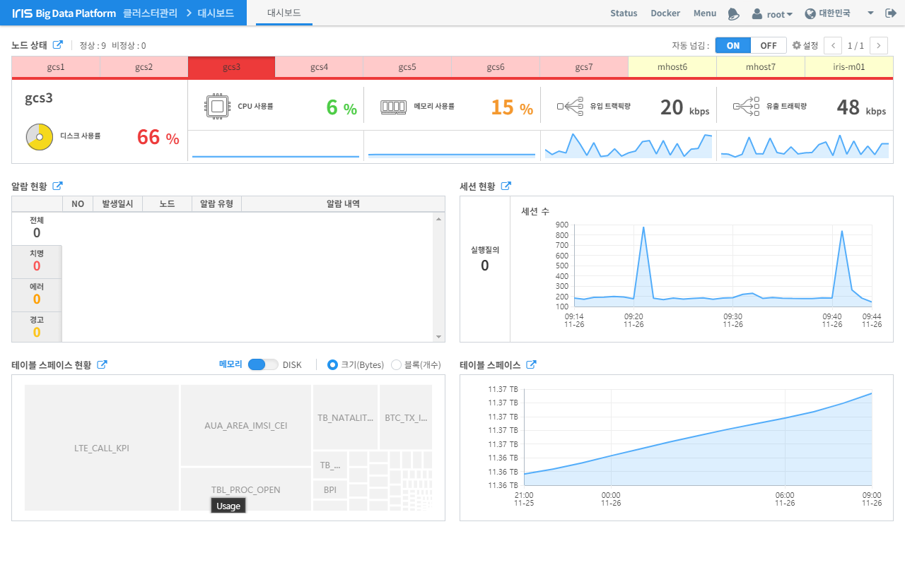
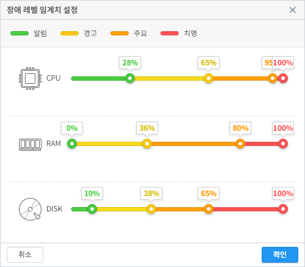

대시보드¶
대시보드는 IRIS의 데이터 노드별 CPU, 메모리, 디스크, 네트워크의 상태를 확인할 수 있고, 사용자가 장애 레벨 임계 치를 설정해 장애의 현황을 실시간으로 확인할 수 있습니다. 또한 IRIS 에서 발생하는 장애 알림 중 3가지(치명, 에러, 경고) 유형을 확인할 수 있습니다. 세션 정보는 분 단위로 세션이 발생하는 개수를 그래프로 확인할 수도 있고 현재 실행되고 있는 세션 개수도 확인할 수 있습니다. 테이블 스페이스 현황에서는 전체 디스크 용량 대비 테이블별 용량의 비중을 그래프로 확인할 수 있습니다. 테이블 스페이스는 시간당 로딩되는 용량을 확인할 수 있습니다.
| 번호 | 구분 | 설명 |
| 1 | 노드 상태 | 데이터 노드별 리소스를 임계치 설정에 따라 확인할 수 있으며, 노드 상태 부분을 클릭하면 시스템에 리소스 사용률(이력조회) 페이지로 전환 됩니다. |
| 2 | 자동 넘김 ON/OFF 및 설정 | 자동 넘김은 대시보드에서 자동으로 노드의 탭이 넘어가는 부분을 설정할 수 있으며, 설정 버튼을 클릭하면 장애 레벨 임계치 설정 팝업을 열 수 있습니다. |
| 3 | 알림 현황 | IRIS-DB의 장애 정보를 확인할 수 있으며, 알림 현황 부분을 클릭하면 시스템에 장애 정보 조회 페이지로 전환 됩니다. |
| 4 | 세션 현황 | IRIS의 현재 세션 수와 실행된 세션 수를 분 단위 그래프로 확인할 수 있으며, 세션 현황 부분을 클릭하면 DB에 세션 관리 페이지로 전환 됩니다. |
| 5 | 테이블 스페이스 현황 | 전체 디스크 대비 테이블별 용량을 확인할 수 있으며, 테이블 스페이스 현황 부분을 클릭하면 DB에 테이블 스페이스(사용률 현황) 페이지로 전환됩니다. |
| 6 | 메모리/디스크 크기, 블록 개수 | 램 디스크와 디스크의 블록 및 개수를 설정할 수 있습니다. |
| 7 | 테이블 스페이스 | IRIS에 데이터가 로딩될 때 전체 테이블의 로딩되는 용량을 시간 단위 그래프로 확인할 수 있으며 테이블 스페이스 부분을 클릭하면 DB에 테이블 스페이스(사용률 조회) 페이지로 전환 됩니다. |
장애 레벨 임계치 설정¶
장애 레벨 임계치 설정은 CPU, 메모리, 디스크에 대한 알림, 경고, 주요, 위험 4단계를 각각 퍼센트(%) 별로 설정 할 수 있으며, 설정 정보 기준으로 대시보드 노드 상태 부분이 CPU, 메모리, 디스크 임계치 중 가장 높은 것을 기준으로 색이 변합니다.
예를 들어 위 설정의 기준으로 현재 노드의 CPU 30%, 메모리 60%, 디스크 50%라 가정 했을 때 CPU는 경고 영역, 메모리는 주요 영역, 디스크는 경고 영역 이므로 장애 레벨이 3개중 가장 높은 것이 주요 영역(메모리)이므로 해당 노드는 노드 상태 부분에서 주황색으로 표시됩니다.